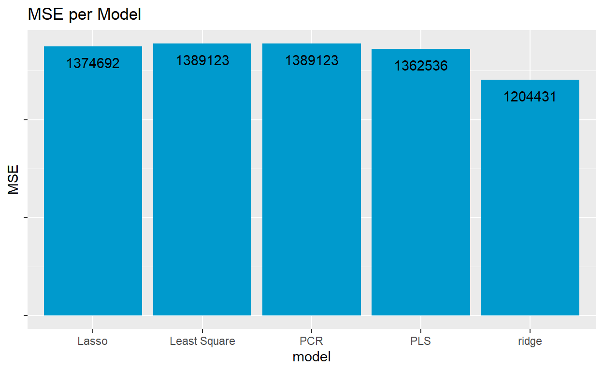
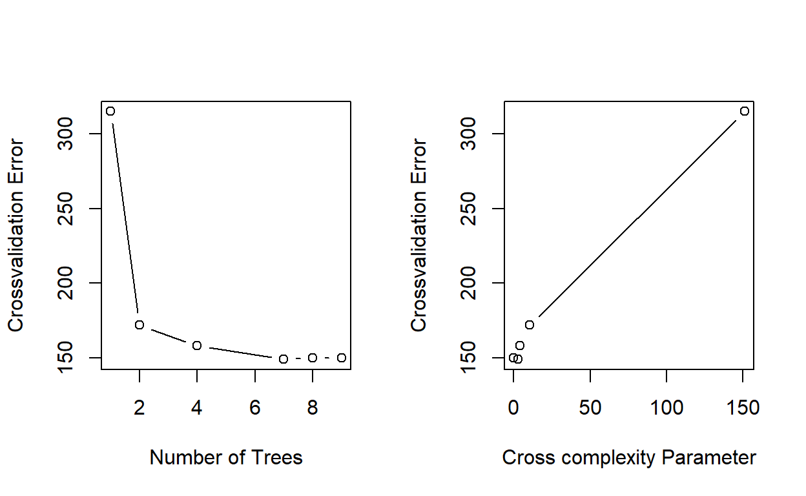
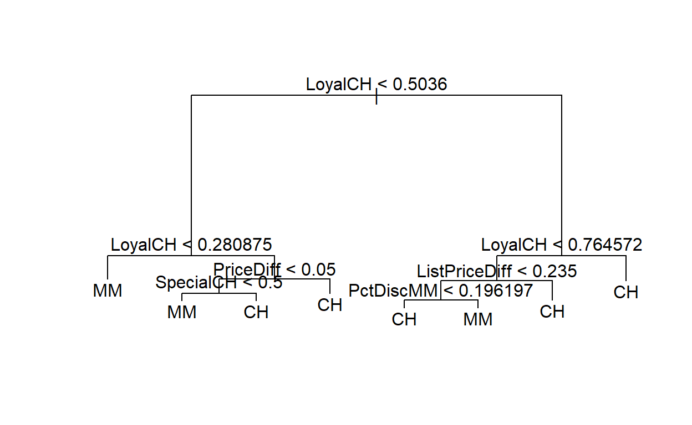
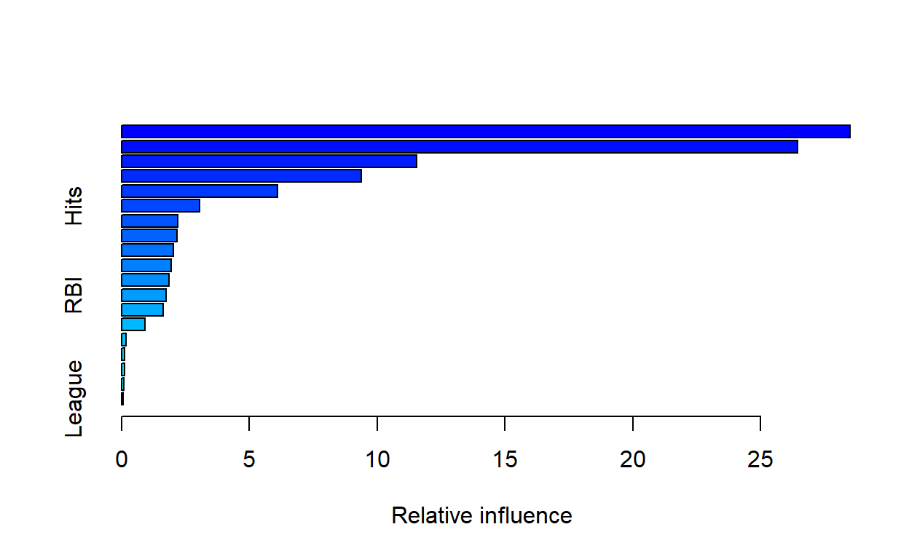
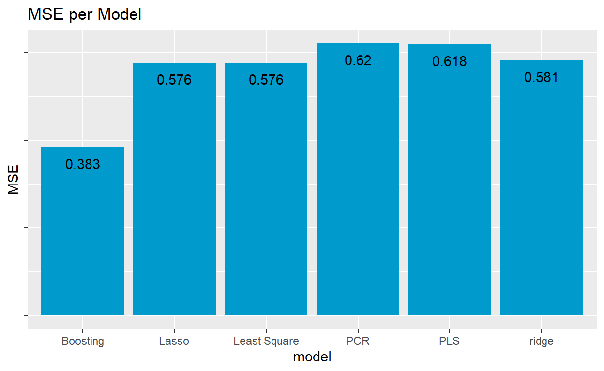
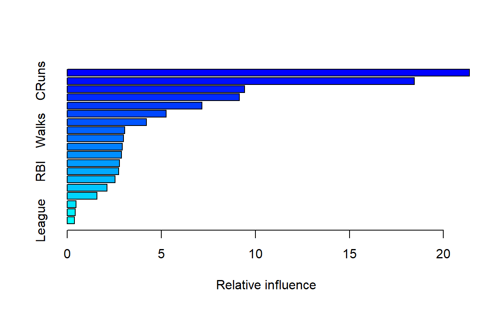

ISLR Ch. 4, Exercise 16
Using the Boston data set, fit classification models in order to predict whether a given census tract has a crime rate above or below the median. Explore logistic regression, LDA, naive Bayes, and KNN models using various subsets of the predictors. Describe your findings. Hint: You will have to create the response variable yourself, using the variables that are contained in the Boston data set.
summary(Boston$crim)
Min. 1st Qu. Median Mean 3rd Qu. Max.
0.00632 0.08204 0.25651 3.61352 3.67708 88.97620 Boston$response <- as.factor(ifelse(Boston$crim > median(Boston$crim),"Above","Below"))
Boston %>% filter(response=="Above") %>% head()
crim zn indus chas nox rm age dis rad tax ptratio lstat
1 0.62976 0 8.14 0 0.538 5.949 61.8 4.7075 4 307 21 8.26
2 0.63796 0 8.14 0 0.538 6.096 84.5 4.4619 4 307 21 10.26
3 0.62739 0 8.14 0 0.538 5.834 56.5 4.4986 4 307 21 8.47
4 1.05393 0 8.14 0 0.538 5.935 29.3 4.4986 4 307 21 6.58
5 0.78420 0 8.14 0 0.538 5.990 81.7 4.2579 4 307 21 14.67
6 0.80271 0 8.14 0 0.538 5.456 36.6 3.7965 4 307 21 11.69
medv response
1 20.4 Above
2 18.2 Above
3 19.9 Above
4 23.1 Above
5 17.5 Above
6 20.2 AboveSet up Training and Test Sets
Logistic Regression
glm.fits <- glm(response ~ zn + indus+chas+nox+rm+age+dis+rad+tax, family = binomial, data = Boston, subset = train)
summary(glm.fits)
Call:
glm(formula = response ~ zn + indus + chas + nox + rm + age +
dis + rad + tax, family = binomial, data = Boston, subset = train)
Deviance Residuals:
Min 1Q Median 3Q Max
-3.05155 -0.00772 0.00850 0.28098 1.80684
Coefficients:
Estimate Std. Error z value Pr(>|z|)
(Intercept) 24.861723 4.752476 5.231 1.68e-07 ***
zn 0.061220 0.031442 1.947 0.051524 .
indus 0.008342 0.047150 0.177 0.859563
chas -0.125309 0.847579 -0.148 0.882467
nox -34.478533 6.935623 -4.971 6.65e-07 ***
rm -0.515107 0.353771 -1.456 0.145381
age -0.011939 0.009914 -1.204 0.228468
dis -0.338121 0.202467 -1.670 0.094918 .
rad -0.594197 0.153996 -3.859 0.000114 ***
tax 0.005827 0.002710 2.151 0.031508 *
---
Signif. codes: 0 '***' 0.001 '**' 0.01 '*' 0.05 '.' 0.1 ' ' 1
(Dispersion parameter for binomial family taken to be 1)
Null deviance: 526.53 on 379 degrees of freedom
Residual deviance: 175.75 on 370 degrees of freedom
AIC: 195.75
Number of Fisher Scoring iterations: 9#coef(glm.fits)
#summary(glm.fits)$coef
glm.probs <-predict(glm.fits, type = "response", Boston.test)
#glm.probs %>% head()
contrasts(Boston$response)
Below
Above 0
Below 1#length(glm.probs)
#dim(Boston)
glm.pred <- rep("Above",126)
glm.pred[glm.probs >.5 ] = "Below"
#Boston$response %>% length()
table(glm.pred,boston.response)
boston.response
glm.pred Above Below
Above 55 3
Below 13 55mean(glm.pred==boston.response)
[1] 0.8730159This means we were correct 87% of the time using the logistic analysis in predicting whether the crime level would be above the median using the variables chosen.
LDA (Linear Discriminant Analysis)
library(MASS)
lda.fit <- lda(response ~ zn + indus+chas+nox+rm+age+dis+rad+tax, data = Boston)
#summary(lda.fit)
lda.fit
Call:
lda(response ~ zn + indus + chas + nox + rm + age + dis + rad +
tax, data = Boston)
Prior probabilities of groups:
Above Below
0.5 0.5
Group means:
zn indus chas nox rm age
Above 1.201581 15.271265 0.08695652 0.6384190 6.174874 85.83953
Below 21.525692 7.002292 0.05138340 0.4709711 6.394395 51.31028
dis rad tax
Above 2.498489 14.940711 510.7312
Below 5.091596 4.158103 305.7431
Coefficients of linear discriminants:
LD1
zn 0.004312445
indus -0.014204281
chas -0.029319347
nox -7.380732435
rm -0.253144266
age -0.010855144
dis 0.010054637
rad -0.084063067
tax 0.001263545
lda.class Above Below
Above 194 14
Below 59 239mean(lda.class==Boston$response)
[1] 0.8557312For LDA, 86% of predictions were correct.
Naive Bayes
library(e1071)
nb.fit <- naiveBayes(response ~ zn + indus+chas+nox+rm+age+dis+rad+tax, family = binomial, data = Boston, subset = train)
#nb.fit
nb.class <- predict(nb.fit, Boston.test)
table(nb.class, boston.response)
boston.response
nb.class Above Below
Above 52 11
Below 16 47mean(nb.class == boston.response)
[1] 0.7857143Using Naive Bayes, we were able to get a prediction accuracy of 78%.
K nearest Neighbors
library(class)
attach(Boston)
set.seed(2)
#Boston %>% dim()
train.x <- Boston[train,colnames(Boston) %in% c("zn","indus","chas","nox","rm","age","dis","rad","tax")]
test.x <- Boston[-train,colnames(Boston) %in% c("zn","indus","chas","nox","rm","age","dis","rad","tax")]
train.response <- Boston$response[train]
test.response <- Boston$response[-train]
#train.x %>% dim()
#test.x %>% dim()
#train.response %>% length()
knn.pred <- knn(train.x,test.x, train.response, k =1)
#knn.pred %>% length()
#test.response %>% length()
#knn.pred %>% length()
#test.response %>% length()
table(knn.pred,test.response)
test.response
knn.pred Above Below
Above 66 7
Below 2 51[1] "Percent Accuracy with K = 1 0.928571428571429"knn.pred <- knn(train.x,test.x, train.response, k =3)
paste("Percent Accuracy with K =3",mean(knn.pred == test.response))
[1] "Percent Accuracy with K =3 0.968253968253968"knn.pred <- knn(train.x,test.x, train.response, k =5)
paste("Percent Accuracy with K = 5",mean(knn.pred == test.response))
[1] "Percent Accuracy with K = 5 0.952380952380952"x<- NULL
y <- NULL
for(i in 1:100){
knn.pred <- knn(train.x,test.x, train.response, k =i)
x<- rbind(x,mean(knn.pred == test.response))
y <- rbind(y,paste(i))
}
data.frame("Kvalue" = y, "Accuracy" = x) %>% arrange(desc(x)) %>% head() %>% kable()
| Kvalue | Accuracy |
|---|---|
| 3 | 0.9682540 |
| 4 | 0.9682540 |
| 6 | 0.9603175 |
| 5 | 0.9523810 |
| 1 | 0.9285714 |
| 7 | 0.9285714 |
In order to set up the KNN model, I needed to create 4 data sets. A training and Testing data set, and a test response, and training response. I then decided to run the model and use various values of K. The first bit of code is a bit inefficient in deciding the best value of K. This can be seen in the first 3 predictions for K = 1, 3, and 5.
In order to find the best value of K, I decided to create a loop that would try every K value from 1 to 100 and store the models % accuracy in a vector named x. I then created a dataframe to visualize the x values and the corresponding K values used.
Using KNN, I created 100 models with a k value form 1 to 100. The top 6 are listed above. The K value of 3 was the best value for K.
| Model | Accuracy |
|---|---|
| KNN | 0.968253968253968 |
| Logistic Regression | 0.873015873015873 |
| LDA | 0.855731225296443 |
| Naive Bayes | 0.855731225296443 |
I would recommend using the KNN to predict whether a crime level will be higher than the median for the Boston data set. It has the highest accuracy at 97%.
ISLR Ch. 5, Exercise 3 (or substitute advanced: Exercise 2)

A.
K fold is implemented by dividing the set of cases into a number of groups which is dictated by K. Each group will have an equal length.
The first group is the validation set. The model is trained on the other groups. So if we had a value of 10 for K. Group 1 would be the validation set and the 9 other groups would be the training groups. A Mean squared error is calculated for the group. This process will be carried out for each group. At the end we will have a MSE for each group. Finally, we take the average of all the MSE’s and that gives us the k fold CV estimate.
B.
The Validation Set Approach:
If K is set to low, then it approaches the same as using the validation set approach. Test Error rate will most likely be higher in the validation approach when compared to kfold validation.
Validation set approach will most likely have a high bias and cause over fitting when compared to the k fold approach.
LOOCV:
Computation advantage when using kfold versus LOOCV. K fold will require less computation/resources/time, then compared to the LOOCV.
LOOCV has less bias, which means less overfitting when applied to other datasets, but will have more variance when compared to K fold and when compared to the validation set approach.
ISLR Ch. 5, Exercise 5


set.seed(5)
Data <- Default
#Data %>% head()
#Data %>% names()
train <- sample(1:nrow(Data), round((nrow(Data)/4)*3,0))
#train %>% length()
#Data %>% dim()
### Create training Sets
Data.test <- Data[-train,]
Data.response <- Data$default[-train]
# Fit model
glm.fits <- glm(default ~ income+balance, family = binomial, data = Data, subset = train)
#summary(glm.fits)
#coef(glm.fits)
#summary(glm.fits)$coef
glm.probs <-predict(glm.fits, type = "response", Data.test)
contrasts(Data$default)
Yes
No 0
Yes 1#length(glm.probs)
#dim(Data.test)
glm.pred <- rep("No",2500)
glm.pred[glm.probs >.5 ] = "Yes"
table(glm.pred,Data.response)
Data.response
glm.pred No Yes
No 2417 48
Yes 7 28mean(glm.pred==Data.response)
[1] 0.978[1] "The test Error Rate is : 2.2%"
For this problem, we will run the sample function 3 times to get a different training set. I will fit the model, and then I will calculate the test error rate again. For ease, I will create a loop. I create a new seed each time I run the loop.
for(i in 1:3){
set.seed(i)
train <- sample(1:nrow(Data), round((nrow(Data)/4)*3,0))
# Create training Sets
Data.test <- Data[-train,]
Data.response <- Data$default[-train]
# Fit model
glm.fits <- glm(default ~ income+balance, family = binomial, data = Data, subset = train)
glm.probs <-predict(glm.fits, type = "response", Data.test)
glm.pred <- rep("No",2500)
glm.pred[glm.probs >.5 ] = "Yes"
mean(glm.pred==Data.response)
print(paste0("The test Error Rate is : ",(1-(mean(glm.pred==Data.response)))*100,"%" ))
}
[1] "The test Error Rate is : 2.6%"
[1] "The test Error Rate is : 2.12%"
[1] "The test Error Rate is : 2.6%"When Running the model with 3 different seeds. I saw that the error rate fluctuated from 2.12 % up to 2.6%.

glm.fits <- glm(default ~ ., family = binomial, data = Data, subset = train)
glm.probs <-predict(glm.fits, type = "response", Data.test)
glm.pred <- rep("No",2500)
glm.pred[glm.probs >.5 ] = "Yes"
table(glm.pred,Data.response)
Data.response
glm.pred No Yes
No 2416 54
Yes 13 17mean(glm.pred==Data.response)
[1] 0.9732[1] "The test Error Rate is : 2.68%"Using the dummy variable is about the same as the last error rate calculated in part c (2.68). I’m comparing it to that result, since the current sample seed is the one used in that loop.
ISLR Ch. 5, Exercise 9

[1] "The population mean of the medv: 22.5328063241107"
sd_error <- Boston$medv%>%sd()/(length(Boston)^(1/2))
paste("The Standard error of the sample mean is:", sd_error)
[1] "The Standard error of the sample mean is: 2.45802946039096"
#Boston$medv %>% length()
boot(Boston, alpha.fn,10000)
ORDINARY NONPARAMETRIC BOOTSTRAP
Call:
boot(data = Boston, statistic = alpha.fn, R = 10000)
Bootstrap Statistics :
original bias std. error
t1* 22.53281 0.0006395257 0.407591The standard error is lower using the Bootstrap when compared to the answer from part c.

t.test(Boston$medv)
One Sample t-test
data: Boston$medv
t = 55.111, df = 505, p-value < 2.2e-16
alternative hypothesis: true mean is not equal to 0
95 percent confidence interval:
21.72953 23.33608
sample estimates:
mean of x
22.53281 mean_boot <- 22.53281
std.boot <- .4137494
upperbound <- mean_boot + 2*std.boot
lowerbound <- mean_boot -2*std.boot
paste0("The confidence interval using the boot: [",lowerbound," , ",upperbound,"]")
[1] "The confidence interval using the boot: [21.7053112 , 23.3603088]"The boot and the t test confidence intervals are very close, almost identical.

[1] "The median value of medv in the population 21.2"
alpha.median <- function(data, index){
medv <-data$medv[index]
median_1 <- median(medv)
}
boot(Boston, alpha.median, 10000)
ORDINARY NONPARAMETRIC BOOTSTRAP
Call:
boot(data = Boston, statistic = alpha.median, R = 10000)
Bootstrap Statistics :
original bias std. error
t1* 21.2 -0.013115 0.3808402The standard error of the median is .3768. This standard error is very small for the original median of 21.2.

10% 20% 50% 75% 90%
12.75 15.30 21.20 25.00 34.80 [1] "The 10th percentile is : 12.75 %"
alpha.quantile <- function(data, index){
medv <-data$medv[index]
perc_10 <- quantile(medv, probs = .1)
}
boot(Boston, alpha.quantile, 10000)
ORDINARY NONPARAMETRIC BOOTSTRAP
Call:
boot(data = Boston, statistic = alpha.quantile, R = 10000)
Bootstrap Statistics :
original bias std. error
t1* 12.75 0.007025 0.4981081detach(Boston)
The standard error for the 10% quantile is .5 for a original value of 12.75.
ISLR Ch. 6, Exercise 2
Referenced Article: https://towardsdatascience.com/understanding-the-bias-variance-tradeoff-165e6942b229
I found this article helpful in understanding accuracy with reference to bias/variance tradeoff.
Figure 2.7 in Textbook also helped with flexibility of different models.

A.
I
More flexible and hence will give improved prediction accuracy when its increase in bias is less than its decrease in variance.
Incorrect. Lasso is less flexible than Least squares.
II
More flexible and hence will give improved prediction accuracy when its increase in variance is less than its decrease in bias.
Incorrect - less flexible than OLS
III
Less flexible and hence will give improved prediction accuracy when its increase in bias is less than its decrease in variance.
Correct - Low bias and high variance will cause overfitting, but will have a higher prediction accuracy than underfitting the data. since the variance is not increasing, we will have more coefficents that explain the response being measuared, and lamda will not go to zero for those predictors.
IV
Less flexible and hence will give improved prediction accuracy when its increase in variance is less than its decrease in bias.
Incorrect - Increase in variance < then decrease in bias would give a situation of high variance and high bias.
Also this is not how the lasso works, lambda will get rid of the variables that have high variance, by setting their cofficents to
B
Repeat (a) for ridge regression relative to least squares.
i
Incorrect - Less Flexible
II
Incorrect - Less Flexible
III
Correct - As lamda increases bias, flexibility decreases, which means we get a decreased variance and increased bias.
Slight increase in bias with less variance increases prediction accuracy.
IV
Incorrect. Larger increase in varriance associated with smaller decrease in bias would not improve prediction accuracy.
C
Repeat (a) for non-linear methods relative to least squares.
i
Correct - More flexible model, Slight increase in bias with less variance increases prediction accuracy.
ii-iV
Incorrect.
ISLR Ch. 6, Exercise 9
(omit e & f) (requires time and effort; please collaborate & use Piazza)
In this exercise, we will predict the number of applications received using the other variables in the College data set.
A
Split the data set into a training set and a test set.
library(ISLR2)
set.seed(1)
#College %>% dim()
#College %>% names()
#College %>% head()
#?College
train <- sample(1:nrow(College), round((nrow(College)/4)*3,0))
#train %>% length()
#train %>% head()
# Create Test actuals and training Sets
College.test <- College[-train,]
College.response <- College$Apps[-train]
college.train <- College[train,]
After looking into College data set, I identified that our response variable will be the column Apps. The training set will be the college dataframe filtered on the train index.
B
Fit a linear model using least squares on the training set, and report the test error obtained.
attach(College)
lm.fit <- lm(Apps ~., data = College, subset = train)
lm.pred <- predict(lm.fit, College.test, type = "response")
lm_mse <- mean((College.response -lm.pred )^2)
lm_mse
[1] 1389123MSE_dataframe <- data.frame("model" = "Least Square", "MSE" = lm_mse)
C
Fit a ridge regression model on the training set, with λ chosen by cross-validation. Report the test error obtained.
library(glmnet)
x <- model.matrix(Apps~.,College)[,-1]
y <- College$Apps
grid <- 10^seq(10,-2, length = 100)
ridge.mod <- glmnet(x[train,], y[train], alpha =0, lambda = grid )
cv.out <- cv.glmnet(x[train,], y[train],alpha = 0)
plot(cv.out)

lamda_best <- cv.out$lambda.min
lamda_best
[1] 364.3384ridge.pred <- predict(ridge.mod, s = lamda_best, newx = x[-train,])
ridge_mse <- mean((ridge.pred - y[-train])^2)
MSE_dataframe <- rbind(MSE_dataframe, c("ridge",ridge_mse))
paste("The test Error Rate is : ", mean((ridge.pred - y[-train])^2))
[1] "The test Error Rate is : 1204431.39092091"D
Fit a lasso model on the training set, with λ chosen by crossvalidation. Report the test error obtained, along with the number of non-zero coefficient estimates.
lasso.mod <- glmnet(x[train,],y[train],alpha = 1, lambda = grid)
cv.out <- cv.glmnet(x[train,], y[train], alpha = 1)
plot(cv.out)
lamda_best <- cv.out$lambda.min
lamda_best
[1] 2.133937lasso.pred <- predict(lasso.mod, s= lamda_best, newx = x[-train,])
paste("The test error rate is ",mean((lasso.pred - y[-train])^2))
[1] "The test error rate is 1374692.34765744"lasso_mse <- mean((lasso.pred - y[-train])^2)
out <- glmnet(x,y, alpha = 1 ,lambda = grid)
lamda.coef <- predict(out, type = "coefficients", s= lamda_best)[1:18,]
paste("The number of non-zero coeficients:",lamda.coef[lamda.coef !=0] %>% length())
[1] "The number of non-zero coeficients: 18"None of the coefficients are zero.
E
Fit a PCR model on the training set, with M chosen by crossvalidation. Report the test error obtained, along with the value of M selected by cross-validation.
library(pls)
set.seed(10)
pcr.fit <- pcr(Apps ~ . , data = College, subset = train, scale = TRUE, validation = "CV")
validationplot(pcr.fit, val.type = "MSEP")
pcr.pred <- predict(pcr.fit,College.test, ncomp = 17)
pcr_mse<- mean((pcr.pred - College.response)^2)
paste("The MSE error is ", pcr_mse)
[1] "The MSE error is 1389123.27022729"From the validation plot, the lowest MSEP for the number of components is around 16,17, and 18.I decided to use 17 as my value of M.
F
Fit a PLS model on the training set, with M chosen by crossvalidation. Report the test error obtained, along with the value of M selected by cross-validation.
pls.fit <- plsr(Apps~., data = College, subset = train, scale = TRUE, validation = "CV")
validationplot(pls.fit, val.type = "MSEP")

pls.pred_7<- predict(pls.fit, College.test, ncomp = 7)
pls.pred_8 <- predict(pls.fit, College.test, ncomp = 8)
paste("The MSE error using M as 7: ", mean((pls.pred_7- College.response)^2))
[1] "The MSE error using M as 7: 1336641.93400001"[1] "The MSE error using M as 8: 1362535.73332994"The number of components ranges from 7 to 8. I will predict using both values of M.
G
Comment on the results obtained. How accurately can we predict the number of college applications received? Is there much difference among the test errors resulting from these five approaches?
| model | MSE |
|---|---|
| ridge | 1204431.39092091 |
| PLS | 1362535.73332994 |
| Lasso | 1374692.34765744 |
| Least Square | 1389123.27022729 |
| PCR | 1389123.27022729 |
MSE_dataframe$MSE <- as.numeric(MSE_dataframe$MSE)
MSE_dataframe %>% ggplot2::ggplot(aes(x = model, y = MSE)) + geom_col(fill = "deepskyblue3")+ theme(axis.text.y = element_blank())+labs(title = "MSE per Model")+geom_text(aes(label = round(as.numeric(MSE),0)), vjust = 2)

The Ridge regression model had the lowest MSE, with PLS coming up the second lowest MSE, following Lasso and the PCR and Least square in last. There is not too much of a difference between the MSE’s, it looks larger due to the scale on the graph.
ISLR Ch. 8, Exercise 4

A.

B

ISLR Ch. 8, Exercise 7

library(randomForest); library(ggplot2)
set.seed(1)
train <- sample (1: nrow (Boston), (nrow (Boston) / 4)*3)
boston.response_test <- Boston$medv[-train]
df <- tibble("predictors" = c(),"ntree" = double(), "MSE" = double())
for(i in seq(1, 13,2)){
for(x in seq(1, 600,25)){
bag.boston <- randomForest(medv ~., data = Boston, subset = train, mtry = i,ntree = x)
yhat.bag <- predict(bag.boston, newdata = Boston[-train,])
mse_1 <- (mean((yhat.bag- boston.response_test)^2))
df <-df %>% add_row(predictors = as.character(i),ntree = x, MSE = mse_1)
}
}
plot<- df %>% ggplot()+geom_line(aes(x = ntree, y = MSE, group = predictors,color = predictors, linetype = predictors))
plotly::ggplotly(plot)
When starting off with less trees, we see that the MSE’s for model is higher. As we increase trees, the MSE drops significantly for all Models. The model that only uses one predictor seems to have the highest MSE ranging from 30 - 25. The models with 3, 5 and 7 seem to have the lowest amount of MSE. Theres no need to have more than 100 Ntrees to get the lowest MSE.
ISLR Ch. 8, Exercise 9
A
Create a training set containing a random sample of 800 observations, and a test set containing the remaining observations.
## OJ dataset
library(ISLR2)
set.seed(1)
train <- sample(1:nrow(OJ), 800)
#train %>% length()
OJ.test <- OJ[-train,]
OJ.response <- OJ$Purchase[-train]
OJ.train <- OJ[train,]
OJ.train.response <- OJ$Purchase[train]
#OJ.test %>% dim()
#OJ.train %>% dim()
#OJ %>% dim()
#OJ.response %>% length()
#OJ.train.response %>% length()
B
Fit a tree to the training data, with Purchase as the response and the other variables as predictors. Use the summary() function to produce summary statistics about the tree, and describe the results obtained. What is the training error rate? How many terminal nodes does the tree have?
Classification tree:
tree(formula = Purchase ~ ., data = OJ, subset = train)
Variables actually used in tree construction:
[1] "LoyalCH" "PriceDiff" "SpecialCH" "ListPriceDiff"
[5] "PctDiscMM"
Number of terminal nodes: 9
Residual mean deviance: 0.7432 = 587.8 / 791
Misclassification error rate: 0.1588 = 127 / 800 The training error rate is 16% There are 8 terminal nodes for this tree. The residual mean deviance is 75%.
C
Type in the name of the tree object in order to get a detailed text output. Pick one of the terminal nodes, and interpret the information displayed.
tree.oj
node), split, n, deviance, yval, (yprob)
* denotes terminal node
1) root 800 1073.00 CH ( 0.60625 0.39375 )
2) LoyalCH < 0.5036 365 441.60 MM ( 0.29315 0.70685 )
4) LoyalCH < 0.280875 177 140.50 MM ( 0.13559 0.86441 )
8) LoyalCH < 0.0356415 59 10.14 MM ( 0.01695 0.98305 ) *
9) LoyalCH > 0.0356415 118 116.40 MM ( 0.19492 0.80508 ) *
5) LoyalCH > 0.280875 188 258.00 MM ( 0.44149 0.55851 )
10) PriceDiff < 0.05 79 84.79 MM ( 0.22785 0.77215 )
20) SpecialCH < 0.5 64 51.98 MM ( 0.14062 0.85938 ) *
21) SpecialCH > 0.5 15 20.19 CH ( 0.60000 0.40000 ) *
11) PriceDiff > 0.05 109 147.00 CH ( 0.59633 0.40367 ) *
3) LoyalCH > 0.5036 435 337.90 CH ( 0.86897 0.13103 )
6) LoyalCH < 0.764572 174 201.00 CH ( 0.73563 0.26437 )
12) ListPriceDiff < 0.235 72 99.81 MM ( 0.50000 0.50000 )
24) PctDiscMM < 0.196197 55 73.14 CH ( 0.61818 0.38182 ) *
25) PctDiscMM > 0.196197 17 12.32 MM ( 0.11765 0.88235 ) *
13) ListPriceDiff > 0.235 102 65.43 CH ( 0.90196 0.09804 ) *
7) LoyalCH > 0.764572 261 91.20 CH ( 0.95785 0.04215 ) *The terminal nodes are shown by the asterix at the end. Lets look at branch 7. This ends in a terminal node. The split is LoyaCH > .764572. There are 123.80 observations in this branch. The prediction for this branch is CH.
D
Create a plot of the tree, and interpret the results.
The criteria most used are loyal CH and price diff.
e
Predict the response on the test data, and produce a confusion matrix comparing the test labels to the predicted test labels. What is the test error rate?
tree.pred <- predict(tree.oj, OJ.test, type = "class")
x <- table(tree.pred, OJ.response)
table(tree.pred,OJ.response) %>% kable()
| CH | MM | |
|---|---|---|
| CH | 160 | 38 |
| MM | 8 | 64 |
[1] "The Test error rate is : 0.1704 %"F, G, H
Apply the cv.tree() function to the training set in order to determine the optimal tree size.
Produce a plot with tree size on the x-axis and cross-validated classification error rate on the y-axis.
Which tree size corresponds to the lowest cross-validated classification error rate?
cv.oj <- cv.tree(tree.oj, FUN = prune.misclass )
par(mfrow = c(1,2))
plot(cv.oj$size, cv.oj$dev, type = "b", xlab = "Number of Trees", ylab = "Crossvalidation Error")
plot(cv.oj$k, cv.oj$dev, type = "b", xlab = "Cross complexity Parameter", ylab = "Crossvalidation Error")

According to the figure above, the Crossvalidation error was the lowest with the number of trees at 8.
I
Produce a pruned tree corresponding to the optimal tree size obtained using cross-validation. If cross-validation does not lead to selection of a pruned tree, then create a pruned tree with five terminal nodes.
prune.oj <- prune.misclass(tree.oj, best = 8)
plot(prune.oj)
text(prune.oj, pretty = 0)

J
Compare the training error rates between the pruned and unpruned trees. Which is higher?
[1] 800[1] 800| CH | MM | |
|---|---|---|
| CH | 450 | 92 |
| MM | 35 | 223 |
[1] "The Test error rate is : 0.159 %"The training error rate is slightly less at 15% compared to the 16 % shown in the original training set.
K
Compare the test error rates between the pruned and unpruned trees. Which is higher?
prune.test.pred <- predict(prune.oj, OJ.test, type = "class")
x<- table(prune.test.pred,OJ.response)
table(prune.test.pred,OJ.response)%>% kable()
| CH | MM | |
|---|---|---|
| CH | 160 | 38 |
| MM | 8 | 64 |
[1] "The Test error rate is : 0.1704 %"The test error from the pruned tree is the same as the unpruned tree. We only removed one branch from the original 9 and the CV error rates looked pretty similar for both.
ISLR Ch. 8, Exercise 10
We now use boosting to predict Salary in the Hitters data set.
A
Remove the observations for whom the salary information is unknown, and then log-transform the salaries.
n
1 59[1] 322 20[1] 263 20Using !is.na(), I filtered the dataset to filter out all rows with an NA salary.
Next we will log transform the Salaries
AtBat Hits HmRun Runs RBI Walks Years CAtBat CHits
-Alan Ashby 315 81 7 24 38 39 14 3449 835
-Alvin Davis 479 130 18 66 72 76 3 1624 457
-Andre Dawson 496 141 20 65 78 37 11 5628 1575
-Andres Galarraga 321 87 10 39 42 30 2 396 101
-Alfredo Griffin 594 169 4 74 51 35 11 4408 1133
-Al Newman 185 37 1 23 8 21 2 214 42
CHmRun CRuns CRBI CWalks League Division PutOuts
-Alan Ashby 69 321 414 375 N W 632
-Alvin Davis 63 224 266 263 A W 880
-Andre Dawson 225 828 838 354 N E 200
-Andres Galarraga 12 48 46 33 N E 805
-Alfredo Griffin 19 501 336 194 A W 282
-Al Newman 1 30 9 24 N E 76
Assists Errors Salary NewLeague
-Alan Ashby 43 10 6.163315 N
-Alvin Davis 82 14 6.173786 A
-Andre Dawson 11 3 6.214608 N
-Andres Galarraga 40 4 4.516339 N
-Alfredo Griffin 421 25 6.620073 A
-Al Newman 127 7 4.248495 AB
Create a training set consisting of the first 200 observations, and a test set consisting of the remaining observations.
set.seed(10)
train <- sample(1:nrow(Hitters_new), 200)
#train %>% length()
Hitters.test <- Hitters_new[-train,]
Hitters.response <- Hitters_new$Salary[-train]
Hitters.train <- Hitters_new[train,]
Hitters.train.response <- Hitters_new$Salary[train]
#Hitters.test %>% dim()
#Hitters_new %>% dim()
#Hitters.train.response%>% length()
#Hitters.response %>% length()
C
Perform boosting on the training set with 1,000 trees for a range of values of the shrinkage parameter λ. Produce a plot with different shrinkage values on the x-axis and the corresponding training set MSE on the y-axis.
library(gbm)
## Example Boost function, summary, and way to calculate MSE
boost.Hitters <- gbm(Salary~.,data = Hitters_new[train,],
distribution = "gaussian", n.trees = 1000,
interaction.depth = 4, shrinkage = .001)
summary(boost.Hitters)

var rel.inf
CAtBat CAtBat 28.48705371
CRuns CRuns 26.44960088
CHits CHits 11.53406819
CRBI CRBI 9.37181852
CWalks CWalks 6.10917041
Hits Hits 3.05905465
CHmRun CHmRun 2.19862661
Walks Walks 2.17115968
HmRun HmRun 2.01444003
AtBat AtBat 1.94060681
Years Years 1.86440763
RBI RBI 1.73382350
PutOuts PutOuts 1.62680896
Runs Runs 0.89988120
Errors Errors 0.16759670
Assists Assists 0.12090202
Division Division 0.11322110
NewLeague NewLeague 0.08105077
League League 0.05670863yhat.boost <- predict(boost.Hitters, newdata = Hitters_new[-train,], n.trees = 1000)
yhat.boost %>% length()
[1] 63[1] "The MSE test error rate is 0.420831510594534"Using the method above, I can now calculate the MSE using the boost model, yhat predictions and the actual results on the training set. Next I will create a loop that will run through multiple values of shrinage and add the calculated MSE’s to a dataframe. I will then plot those values.
boost_df <- tibble("Shrinkage" = double(), "MSE" = double())
for(i in seq(.0001, .25,.01)){
boost.Hitters <- gbm(Salary~.,data = Hitters_new[train,],
distribution = "gaussian", n.trees = 1000,
interaction.depth = 4, shrinkage = i)
yhat.boost <- predict(boost.Hitters, newdata = Hitters_new[train,], n.trees = 1000)
mse_1 <- mean((yhat.boost- Hitters.train.response)^2)
boost_df <- boost_df %>% add_row(Shrinkage = i, MSE = mse_1)
}
plot<- boost_df %>% ggplot()+geom_line(aes(x = Shrinkage, y = MSE))+xlab("Shrinkage (lambda)")
plotly::ggplotly(plot)
D
Produce a plot with different shrinkage values on the x-axis and the corresponding test set MSE on the y-axis.
For this, I will do the exact steps as done in part C, but I will use the test set instead of the training set when making predicitons.
boost_df_test <- tibble("Shrinkage" = double(), "MSE" = double())
for(i in seq(.0001, .25,.01)){
boost.Hitters <- gbm(Salary~.,data = Hitters_new[train,],
distribution = "gaussian", n.trees = 1000,
interaction.depth = 4, shrinkage = i)
yhat.boost <- predict(boost.Hitters, newdata = Hitters_new[-train,], n.trees = 1000)
mse_1 <- mean((yhat.boost- Hitters.test$Salary)^2)
boost_df_test <- boost_df_test %>% add_row(Shrinkage = i, MSE = mse_1)
}
plot<- boost_df_test %>% ggplot()+geom_line(aes(x = Shrinkage, y = MSE))+xlab("Shrinkage (lambda)")
plotly::ggplotly(plot)
# A tibble: 1 x 1
`min(MSE)`
<dbl>
1 0.377which.min(boost_df_test$MSE)
[1] 2boost_df_test[which.min(boost_df_test$MSE),]
# A tibble: 1 x 2
Shrinkage MSE
<dbl> <dbl>
1 0.0101 0.377Min MSE can be found at .0101 Lamda.
E
Compare the test MSE of boosting to the test MSE that results from applying two of the regression approaches seen in Chapters 3 and 6.
For this I decided to use multiple models from ch. 3 and ch. 6. See below:
AtBat Hits HmRun Runs RBI Walks Years CAtBat CHits
-Alan Ashby 315 81 7 24 38 39 14 3449 835
-Alvin Davis 479 130 18 66 72 76 3 1624 457
-Andre Dawson 496 141 20 65 78 37 11 5628 1575
-Andres Galarraga 321 87 10 39 42 30 2 396 101
-Alfredo Griffin 594 169 4 74 51 35 11 4408 1133
-Al Newman 185 37 1 23 8 21 2 214 42
CHmRun CRuns CRBI CWalks League Division PutOuts
-Alan Ashby 69 321 414 375 N W 632
-Alvin Davis 63 224 266 263 A W 880
-Andre Dawson 225 828 838 354 N E 200
-Andres Galarraga 12 48 46 33 N E 805
-Alfredo Griffin 19 501 336 194 A W 282
-Al Newman 1 30 9 24 N E 76
Assists Errors Salary NewLeague
-Alan Ashby 43 10 6.163315 N
-Alvin Davis 82 14 6.173786 A
-Andre Dawson 11 3 6.214608 N
-Andres Galarraga 40 4 4.516339 N
-Alfredo Griffin 421 25 6.620073 A
-Al Newman 127 7 4.248495 Alm.fit <- lm(Salary ~., data = Hitters_new, subset = train)
lm.pred <- predict(lm.fit, Hitters_new[-train,], type = "response")
lm_mse <- mean((lm.pred - Hitters.response)^2)
paste("The Linear Model MSE is: ",lm_mse)
[1] "The Linear Model MSE is: 0.576163818320103"MSE_dataframe <- data.frame("model" = "Least Square", "MSE" = lm_mse)
## Boost
boost.Hitters <- gbm(Salary~.,data = Hitters_new[train,],
distribution = "gaussian", n.trees = 1000,
interaction.depth = 4, shrinkage = .0101)
yhat.boost <- predict(boost.Hitters, newdata = Hitters_new[-train,], n.trees = 1000)
mse_1 <- mean((yhat.boost- Hitters.response)^2)
MSE_dataframe <- rbind(MSE_dataframe, c("Boosting",mse_1))
paste("The test Error Rate for Boosting is : ", mean((yhat.boost - Hitters.response)^2))
[1] "The test Error Rate for Boosting is : 0.382735329466136"## Ridge
set.seed(10)
x <- model.matrix(Salary~.,Hitters_new)[,-1]
y <- Hitters_new$Salary
grid <- 10^seq(10,-2, length = 100)
ridge.mod <- glmnet(x[train,], y[train], alpha =0, lambda = grid )
cv.out <- cv.glmnet(x[train,], y[train],alpha = 0)
lamda_best <- cv.out$lambda.min
ridge.pred <- predict(ridge.mod, s = lamda_best, newx = x[-train,])
ridge_mse <- mean((ridge.pred - y[-train])^2)
MSE_dataframe <- rbind(MSE_dataframe, c("ridge",ridge_mse))
paste("The test Error Rate for Ridge is : ", mean((ridge.pred - y[-train])^2))
[1] "The test Error Rate for Ridge is : 0.581396338527786"## Lasso
lasso.mod <- glmnet(x[train,],y[train],alpha = 1, lambda = grid)
cv.out <- cv.glmnet(x[train,], y[train], alpha = 1)
lamda_best <- cv.out$lambda.min
lasso.pred <- predict(lasso.mod, s= lamda_best, newx = x[-train,])
paste("The test error rate for lasso ",mean((lasso.pred - y[-train])^2))
[1] "The test error rate for lasso 0.575921346257875"lasso_mse <- mean((lasso.pred - y[-train])^2)
MSE_dataframe <- rbind(MSE_dataframe, c("Lasso",lasso_mse))
## PCR
pcr.fit <- pcr(Salary ~ . , data = Hitters_new, subset = train, scale = TRUE, validation = "CV")
validationplot(pcr.fit,val.type = "MSEP")
pcr.pred <- predict(pcr.fit,Hitters.test, ncomp = 10)
pcr_mse<- mean((pcr.pred - Hitters.response)^2)
# lowest MSEP at 10 componenets.
paste("The MSE error for PCR is ", pcr_mse)
[1] "The MSE error for PCR is 0.619877318874639"MSE_dataframe <- rbind(MSE_dataframe, c("PCR",pcr_mse))
## PLS
pls.fit <- plsr(Salary~., data = Hitters_new, subset = train, scale = TRUE, validation = "CV")
validationplot(pls.fit, val.type = "MSEP")
# Lowest MSEP at 5 components
pls.pred_7<- predict(pls.fit, Hitters.test, ncomp = 5)
paste("The MSE error using M as 5: ", mean((pls.pred_7- Hitters.response)^2))
[1] "The MSE error using M as 5: 0.617966162736438"pls_mse <- mean((pls.pred_7- Hitters.response)^2)
MSE_dataframe <- rbind(MSE_dataframe, c("PLS",pls_mse))
#MSE_dataframe %>% arrange(MSE)
MSE_dataframe$MSE <- as.numeric(MSE_dataframe$MSE)
MSE_dataframe %>% ggplot2::ggplot(aes(x = model, y = MSE)) + geom_col(fill = "deepskyblue3")+theme(axis.text.y = element_blank())+labs(title = "MSE per Model")+geom_text(aes(label = round(as.numeric(MSE),3)), vjust = 2)

Boosting the model will give us the lowest MSE, with PCR in second place. Boosting is the model of choice by far compared to the other models.
F
Which variables appear to be the most important predictors in the boosted model?
summary(boost.Hitters)

var rel.inf
CAtBat CAtBat 21.3776399
CRuns CRuns 18.4554725
CHits CHits 9.4230585
CRBI CRBI 9.1617592
CWalks CWalks 7.1643822
Years Years 5.2568153
CHmRun CHmRun 4.2210637
Walks Walks 3.0531623
PutOuts PutOuts 3.0017692
AtBat AtBat 2.9358935
Hits Hits 2.8943762
Errors Errors 2.7801941
RBI RBI 2.7298938
HmRun HmRun 2.5411422
Runs Runs 2.1241977
Assists Assists 1.5876161
Division Division 0.4762580
NewLeague NewLeague 0.4306447
League League 0.3846610At bat and runs have the most influence.
G
Now apply bagging to the training set. What is the test set MSE for this approach?
set.seed(1)
bag_data <- tibble("predictors" = c(),"ntree" = double(), "MSE" = double())
for(i in seq(1, 19,2)){
for(x in seq(1, 600,100)){
bag.hitters <- randomForest(Salary ~., data = Hitters.train, mtry = i,ntree = x)
yhat.bag <- predict(bag.hitters, newdata = Hitters.test)
mse_1 <- (mean((yhat.bag- Hitters.response)^2))
bag_data <-bag_data %>% add_row(predictors = as.character(i),ntree = x, MSE = mse_1)
}
}
plot<- bag_data %>% ggplot()+geom_line(aes(x = ntree, y = MSE, group = predictors,color = predictors, linetype = predictors))
plotly::ggplotly(plot)
Based on the plot, we should use 13 predictors and 100 trees.
bag.hitters <- randomForest(Salary ~., data = Hitters.train, mtry = 13,ntree = 100)
yhat.bag <- predict(bag.hitters, newdata = Hitters.test)
paste("The MSE for bagging is : ",(mean((yhat.bag- Hitters.response)^2)))
[1] "The MSE for bagging is : 0.362244453542562"The .3622 is slightly lower than the boosting MSE of .38.
Final Project IDEAS
Identify a data set that you plan to use for your project/poster and your likely collaborators. What outcome of interest do will you attempt to predict? Why do you expect that the available features (variables), or some subset of them, should help predict this outcome?
For the project, I plan to work alone. If I do stumble on certain problems, I will reach out via Piazza or I will go in for office hours.
For my dataset I went to Kaggle.com. I’m not entirely sure what data set I will use. I found the following data sets that I could possibly use:
For a descrete analysis I could use the Amazon seller dataset from Kagle. This data set is trying to predict whether an amazon order will go through. https://www.kaggle.com/pranalibose/amazon-seller-order-status-prediction This data set was created with the purpose of predicting order sucesses.
I’d also like to possibly use stock data and indicators to predict whether a stock will increase or decrease, and to predict future prices. I know that a lot of people use technical indicators to make buy and sell decisions. I’d like to give that an attempt as well.
I also found another data set that was interesting from Kagle. This data set looks at wind power. This data set is trying to predict how much wind is generated by the windmill in the following 15 days. https://www.kaggle.com/theforcecoder/wind-power-forecasting